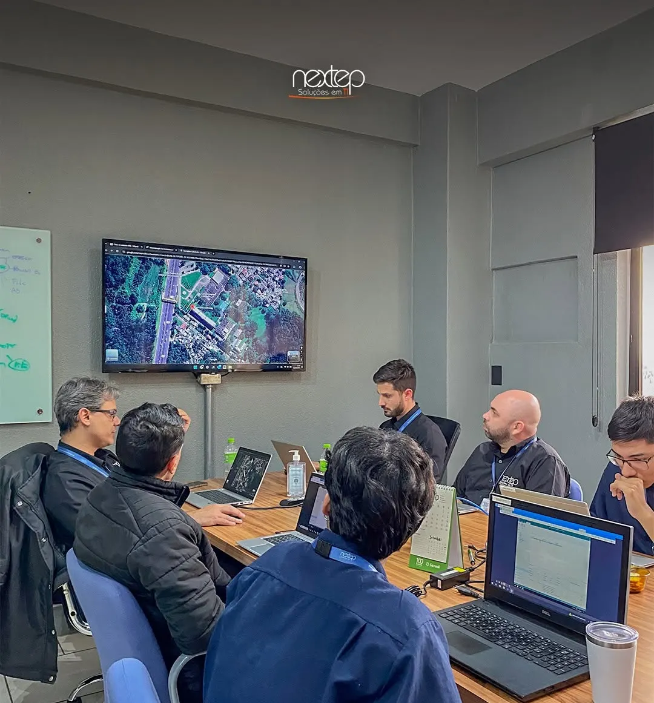
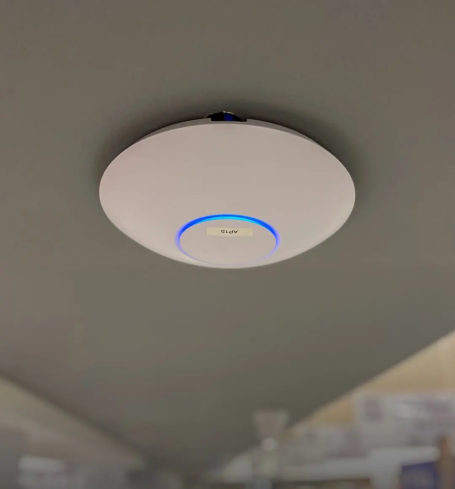
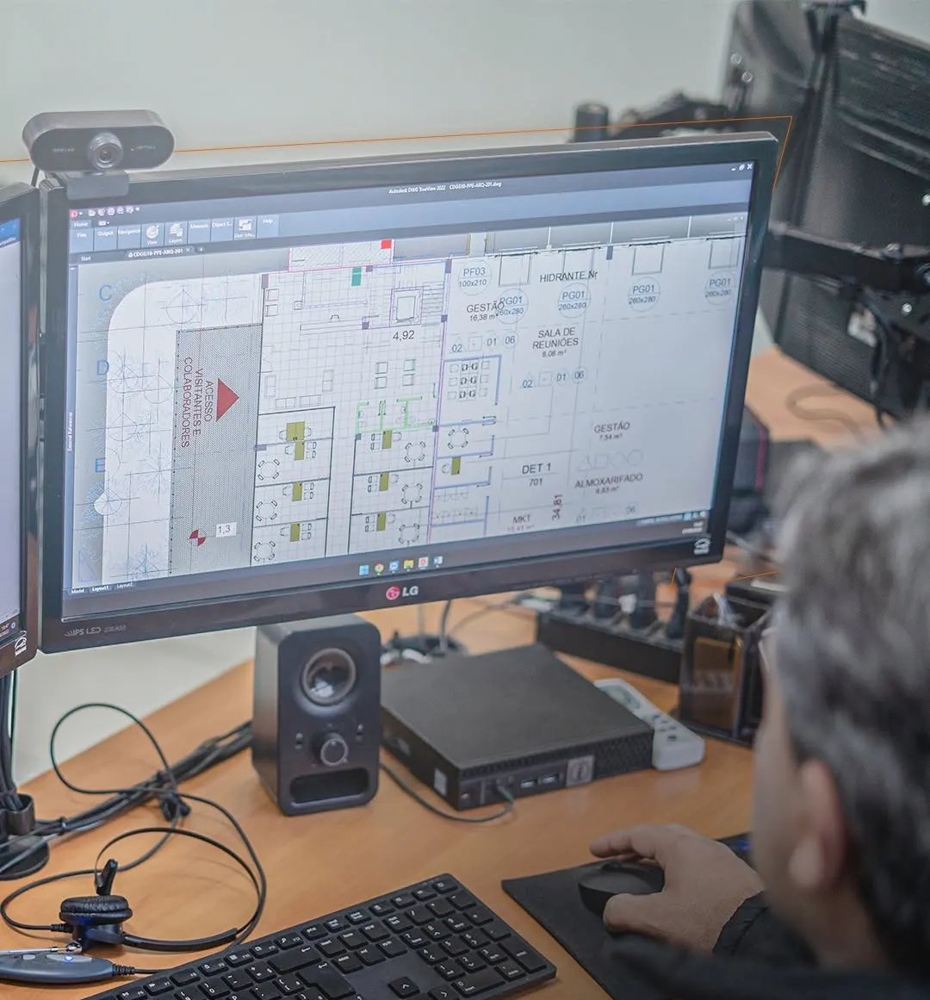
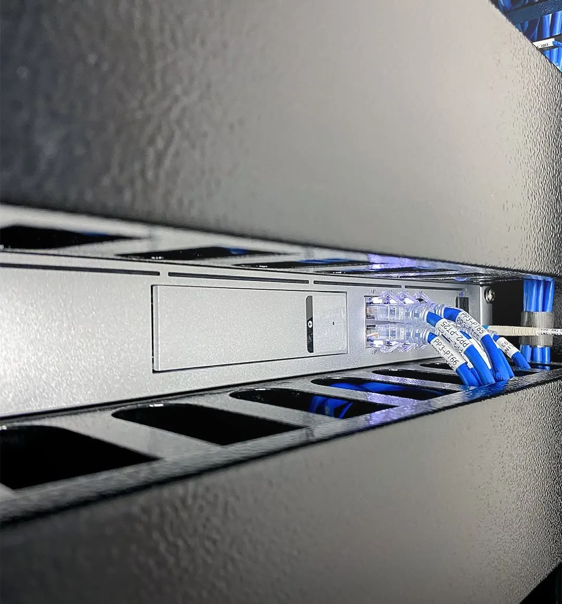
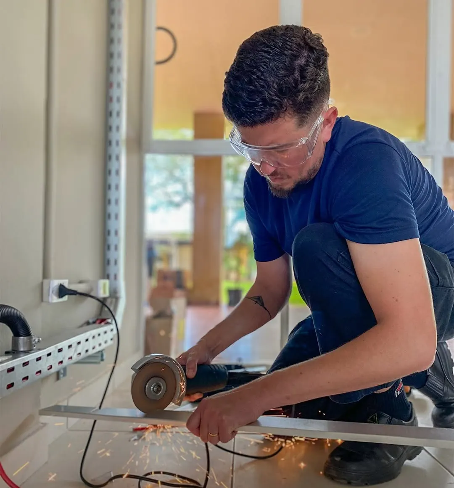
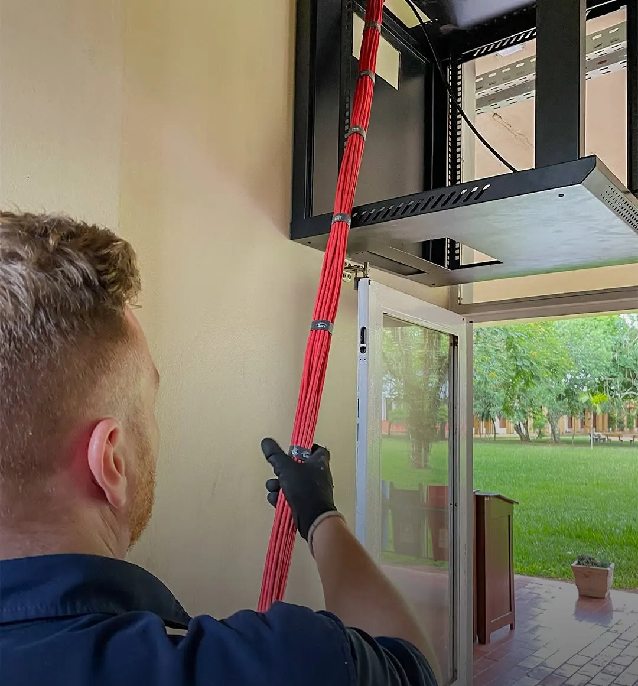
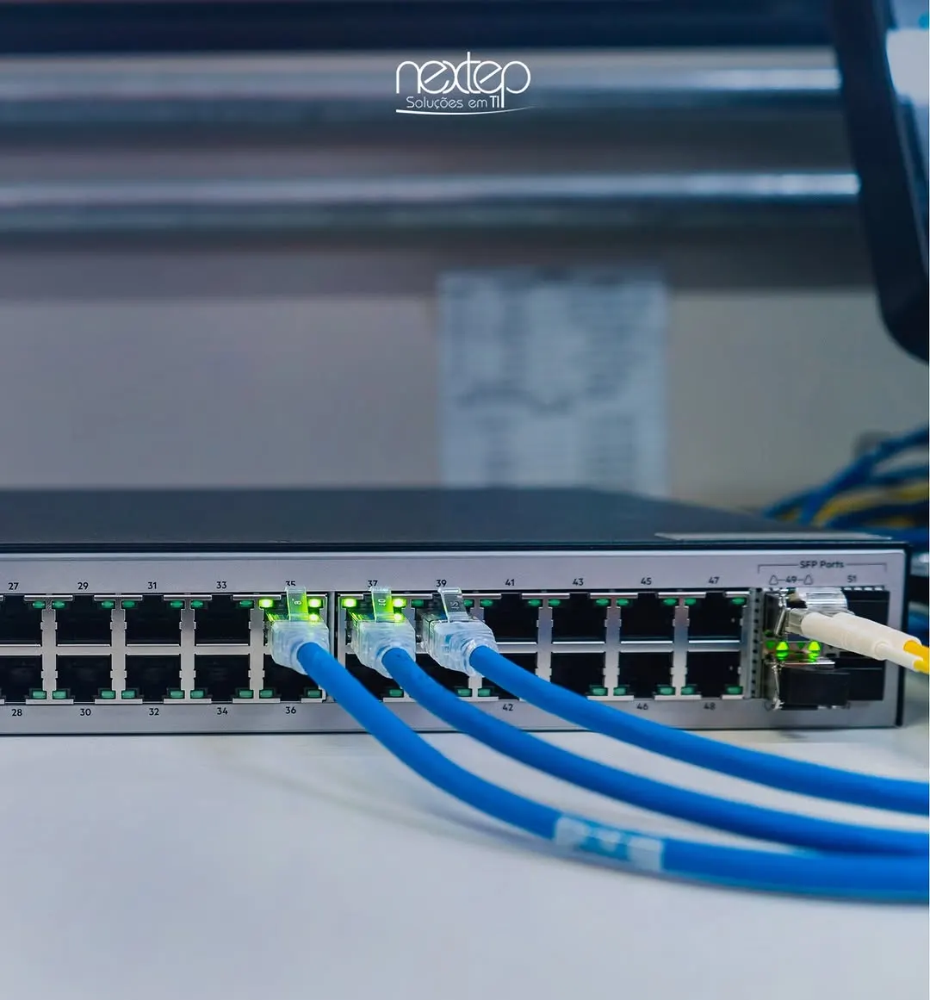

Gestão completa ou um projeto pontual
Tudo o que a TI da sua empresa precisa, com uma equipe só.
Seis frentes que funcionam juntas. Você pode contratar uma delas para um projeto pontual ou deixar a TI inteira com a Nextep.






Consultoria e gestão de TI
Um setor de TI completo e estratégico, sem você precisar contratar e gerenciar uma equipe. A Nextep assume o ambiente, organiza o que existe e planeja o que vem pela frente.
- Diagnóstico e mapeamento de todo o ambiente de tecnologia
- Inventário de equipamentos, licenças e contratos
- Plano de investimentos alinhado ao crescimento da empresa
- Reuniões periódicas com indicadores de atendimento


Suporte técnico especializado
Equipe própria, atendimento remoto e presencial e um canal para cada urgência. É assim que a Juntapel descreve: em 15 minutos, alguém já está falando com você.
- Help desk remoto para usuários e equipamentos
- Atendimento presencial em Porto Alegre e região
- Área do cliente para abrir e acompanhar chamados
- Chat e telefone integrados à central 3CX
- Manutenção preventiva programada
Administração de redes
Rede lenta derruba o caixa, a câmera e o sistema de uma vez. Projetamos, configuramos e administramos a rede para ela aguentar o dia mais movimentado.
- Switches gerenciáveis com PoE
- Wi-Fi corporativo dimensionado por estudo de cobertura (Wi-Fi Survey)
- Firewall, VPN e segmentação de rede
- Monitoramento contínuo de links e equipamentos


Segurança da informação
Ransomware não pede licença: espera a primeira falha. Fechamos as portas mais comuns de ataque e garantimos que, se algo acontecer, a empresa volta a operar rápido.
- Backup em nuvem com teste de restauração
- Política de acesso Zero Trust
- Firewall de nova geração e antivírus gerenciado
- Adequação técnica à LGPD

Projetos de infraestrutura
Sede nova, reforma ou mudança. Desenhamos cada ponto na planta, acompanhamos a obra e entregamos a sala técnica pronta para o primeiro dia de operação.
- Cabeamento estruturado Cat6 e fibra óptica
- Montagem e reestruturação de racks
- Servidores e alta disponibilidade
- CFTV IP com inteligência artificial
- Mudança de sede com rack temporário, sem parar a operação


Soluções de conectividade
Matriz, filiais e quem trabalha de fora acessando o mesmo servidor, com a mesma velocidade. Como a Juntapel, que atende PR, SC e o interior do RS a partir de um único ambiente.
- Links de internet redundantes com troca automática
- Interligação entre matriz e filiais
- Acesso remoto seguro
- Estrutura padronizada para redes multi-lojas
TI para supermercados, do rack ao caixa.
Em parceria com a Sintonia Fina, grupo de mais de 30 empresas especialistas em varejo, a Nextep assume toda a tecnologia de lojas novas, reformas e mudanças. A loja abre com tudo funcionando.
- Rede e servidores da loja e do centro de distribuição
- CFTV IP Full HD com inteligência artificial
- Sonorização ambiente
- Automação de frente de caixa
- Transferência de loja inteira sem parar de vender


Perguntas frequentes
Não achou a sua? Fale com um especialista pelo chat no canto da tela ou pelo (51) 3103-9943.
Por que terceirizar a TI da empresa?
Você passa a contar com uma equipe inteira, com especialistas em redes, servidores, segurança e suporte, pelo custo próximo ao de um funcionário. E o seu time volta a focar no negócio, não no computador que travou.
Vocês atendem empresas de que tamanho?
De pequenas e médias empresas a redes de supermercados com várias lojas. Hoje a Nextep gerencia mais de 5.000 dispositivos em 4 estados.
Como funciona o atendimento quando algo para?
Você abre o chamado pela área do cliente, pelo chat ou por telefone. A equipe atua primeiro de forma remota e, se for preciso, vai até a empresa. 98% dos chamados são resolvidos dentro do prazo combinado.
Por que meus dados correm perigo na internet?
Ataques, vazamentos e uso indevido de informação acontecem centenas de vezes por dia no Brasil. Backup testado, firewall bem configurado e controle de acesso reduzem muito o risco e o tempo de parada.
Dá para fazer só um projeto, sem contrato mensal?
Sim. Cabeamento, montagem de rack, Wi-Fi ou mudança de sede podem ser contratados como projeto fechado. Muitos clientes começam assim e depois deixam a gestão com a Nextep.
Não sabe por onde começar?
A primeira consultoria é gratuita. Um especialista avalia o seu ambiente e diz o que precisa de atenção agora.